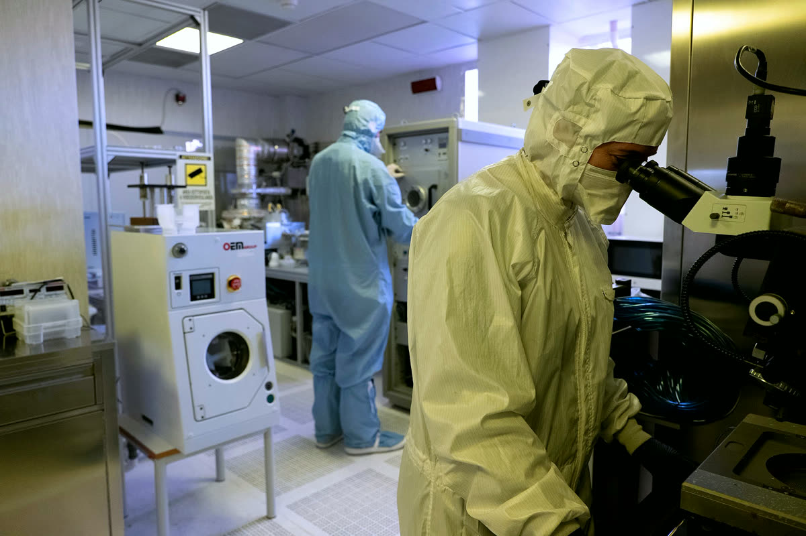

Fai la tesi con noi.
Tesi triennali (LT), magistrali (LM) e di dottorato in analisi dati, test su fascio, simulazione e attività di laboratorio. Scrivi ai referenti di ogni argomento, oppure vieni a vedere il laboratorio.
Read in EnglishCome funziona.
- Scegli un argomento
Tutti gli argomenti qui sotto sono aperti a tesi triennali (LT) e magistrali (LM). Per il dottorato scrivi a crystals@fe.infn.it.
- Scrivi ai referenti
Indica il tuo corso di laurea e quando vorresti iniziare. Può risponderti uno qualsiasi dei referenti.
- Vieni a vedere il laboratorio
Conosci il gruppo, visita la camera bianca e gli strumenti e concorda il progetto con il tuo relatore, che può essere dell’Università o dell’INFN.
Analisi dati
- Analisi di decadimenti rari del mesone K
- Analisi delle prestazioni di prototipi di calorimetri a cristalli orientati per la fisica delle alte energie e per satelliti
- Analisi dei dati dei test su fascio di cristalli curvi
- Prestazioni di prototipi innovativi di sorgenti di positroni
Esperimenti su fascio
- Turni di presa dati di NA62 come shift leader
- Test su fascio di prototipi di calorimetri a cristalli orientati al CERN e a DESY
- Test su fascio di cristalli curvi al CERN, a DESY e a MAMI
- Test su fascio di prototipi innovativi di sorgenti di positroni al CERN, al PSI e a MAMI
Simulazione Geant4
- Simulazione di apparati per test su fascio di cristalli orientati
- Sviluppo della fisica dei cristalli nel toolkit Geant4
- Simulazione dell'accelerazione a onda di scia di plasma in bersagli solidi per l'esperimento E336 a SLAC
- Progettazione del sistema di iniezione di FCC-ee
Attività di laboratorio
- Sviluppo di prototipi di calorimetri a cristalli orientati per la fisica delle alte energie e per satelliti
- Sviluppo e caratterizzazione di cristalli curvi
Ti interessa un'altra linea?
Per queste linee non c'è ancora un argomento in elenco. Scrivi ai referenti per chiedere di una tesi.
- Crystalline undulatorsHard photons from periodically bent crystalsLaura Bandiera
- Crystal bondingGlue-free assemblies that keep their curvatureAndrea Mazzolari
- X-ray spectroscopyBent crystal analysersAndrea Mazzolari
- Laue lensesFocusing γ rays for astrophysicsAndrea Mazzolari
- X-ray tomoscopyCrystal beam splitters for MHz imagingcrystals@fe.infn.it
- Cryogenic detectorsSilicon arrays for dark matter and neutrinoscrystals@fe.infn.it
- Gravitational wavesSilicon optics for the Einstein Telescopecrystals@fe.infn.it
I progetti citati.
- NA62
- Esperimento del CERN che misura decadimenti rari del mesone K.
- OREO
- Il nostro progetto INFN sui calorimetri a cristalli orientati.
- CERN DRD6
- Collaborazione del CERN per la ricerca e lo sviluppo sui calorimetri.
- Mu2e
- Esperimento del Fermilab che cerca la conversione di un muone in un elettrone; i nostri cristalli curvi proteggono l'estrazione del fascio.
- TWOCRYST
- Test a LHC con due cristalli curvi in sequenza.
- CRYSTAL BOND
- Il nostro progetto INFN sui cristalli incollati senza colla a substrati sagomati.
- e+BOOST
- Progetto di ricerca (PRIN) sulle sorgenti di positroni a cristalli orientati.
- PSI P3
- Esperimento sulle sorgenti di positroni al Paul Scherrer Institute.
- FCC-ee
- Il Future Circular Collider per elettroni e positroni proposto al CERN.
- TRILLION
- Borsa Marie Skłodowska-Curie sulla fisica dei cristalli in Geant4.
- GEANT4INFN
- Progetto INFN che sviluppa il toolkit Geant4.